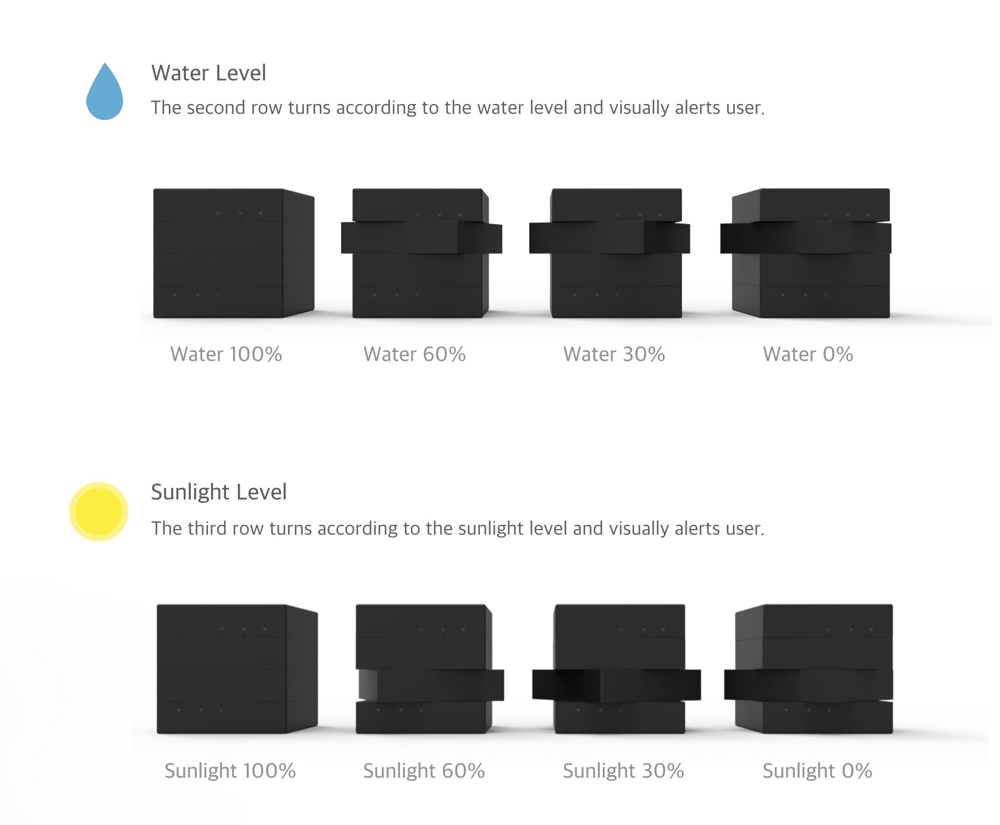

* This page is optimized for full screen mode display. Please note that some texts may be distorted if not in full screen mode.


Rubik's Pot
Green habit for growing pot plants
(Inspired from extreme gamers UX)
UX, Product
Korea University | 2014
Design Concept
Extreme users represent the top users of a certain field. Rubik’s pot is inspired by the research insights of extreme game users experience.
Rubik's Pot is an interactive plant pot with each axis rotating like a Rubik's cube. This pot twists as the water and sunlight level drops, and stimulates the user’s desire to align the cube. When plant is given water and sunlight, its instant reaction gives a sense of accomplishment to the user.
Implementing extreme gamer UX factors (‘Immersive’, ‘Goal achievements’, ‘Visual stimuli’), Rubik’s pot gives user an interesting experience and enables them to effectively manage plants.
Extreme user study
I interviewed 10 extreme gamers who spend more than 8 hours a day playing online game. I also tried playing 14 hours of game myself to understand the users.
Insight & Design Direction
The experience that affect game users to play were:
addictive, superiority, achievement, immersive
These factors were implemented in final features of design solution